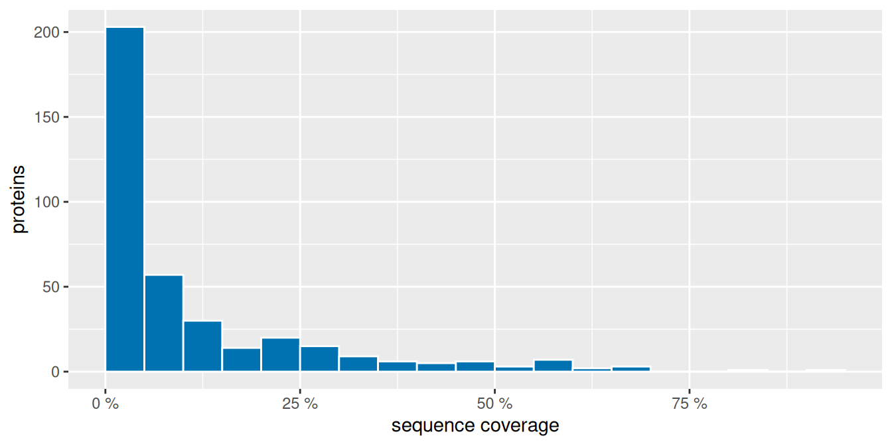
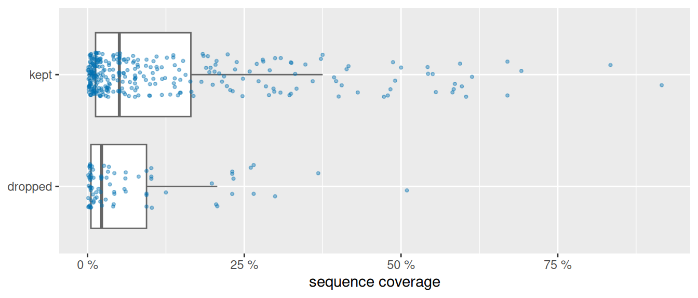
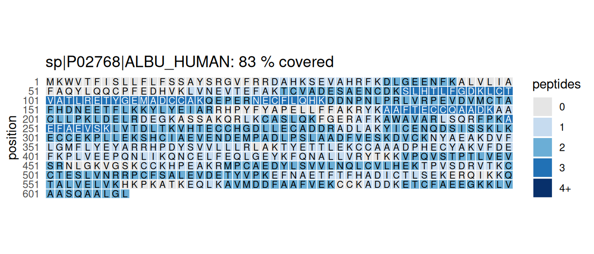
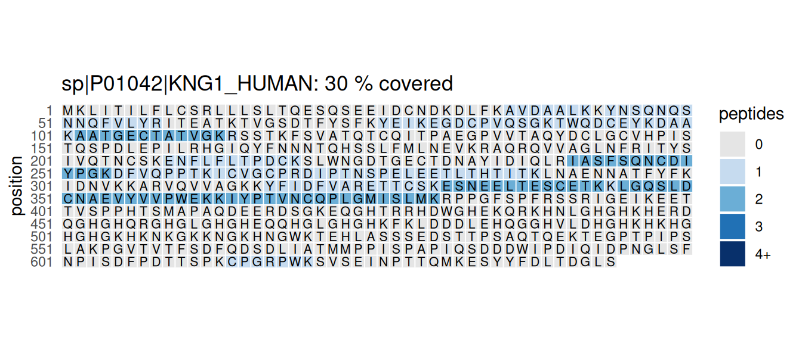
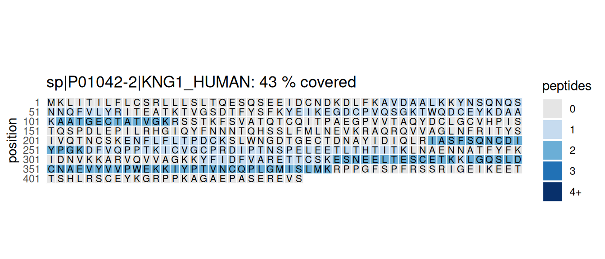

library(prozor)
library(ggplot2)Protein Sequence Coverage
Introduction
The sequence coverage of a protein is the fraction of its residues that the identified peptides cover. It tells how much of a protein the data actually support: a protein identified by one short peptide is weaker evidence than one whose sequence is covered from end to end. Per residue, coverage shows which regions the peptides support, and, for proteins with several isoforms, whether the peptides cover the stretches that tell the isoforms apart.
prozor computes coverage from the result of annotate_peptides() (or annotate_aho()):
residue_coverage()counts, for every residue, how many distinct peptides cover it;sequence_coverage()summarizes this per protein;plot_coverage()draws a protein sequence with each residue colored by its coverage.
Data
The example data are the peptides identified in a human sample (IDResults.txt.gz) and two FASTA databases: one with canonical sequences only and one that also contains isoforms.
file <- system.file("extdata/IDResults.txt.gz", package = "prozor")
peptides <- unique(utils::read.delim(file)$peptideSeq)
canonical <- read_peptide_fasta(system.file("p1000_db1_example/Annotation_canSeq.fasta.gz", package = "prozor"))
all_sequences <- read_peptide_fasta(system.file("p1000_db1_example/Annotation_allSeq.fasta.gz", package = "prozor"))
c(peptides = length(peptides), canonical = length(canonical), with_isoforms = length(all_sequences)) peptides canonical with_isoforms
1520 382 1072 Coverage per protein
First we find the proteins each peptide occurs in, then summarize the coverage per protein.
annotation <- annotate_peptides(peptides, canonical)
coverage <- sequence_coverage(annotation)
head(coverage) protein_id protein_length n_peptides n_covered coverage
1 sp|A0A075B6I9|LV746_HUMAN 117 1 7 0.05982906
2 sp|A0A075B6K5|LV39_HUMAN 115 1 16 0.13913043
3 sp|A0A075B6Q5|HV364_HUMAN 118 2 12 0.10169492
4 sp|A0A075B6R2|HV404_HUMAN 117 1 6 0.05128205
5 sp|A0A087WSY4|HV432_HUMAN 118 1 6 0.05084746
6 sp|A0A087WSY6|KVD15_HUMAN 115 1 7 0.06086957Most proteins are covered only in small part; a few abundant proteins, such as serum albumin, are covered almost completely.
ggplot(coverage, aes(x = coverage)) +
geom_histogram(binwidth = 0.05, boundary = 0, fill = "#0072B2", colour = "white") +
scale_x_continuous(labels = function(x) paste0(100 * x, " %")) +
labs(x = "sequence coverage", y = "proteins")
best <- coverage[order(coverage$coverage, decreasing = TRUE), ]
knitr::kable(head(best, 10), digits = 2, row.names = FALSE, caption = "The ten best-covered proteins.")| protein_id | protein_length | n_peptides | n_covered | coverage |
|---|---|---|---|---|
| sp|P01834|IGKC_HUMAN | 107 | 9 | 98 | 0.92 |
| sp|P02768|ALBU_HUMAN | 609 | 69 | 508 | 0.83 |
| sp|P02787|TRFE_HUMAN | 698 | 51 | 483 | 0.69 |
| sp|P0DOY2|IGLC2_HUMAN | 106 | 6 | 71 | 0.67 |
| sp|P0DOY3|IGLC3_HUMAN | 106 | 6 | 71 | 0.67 |
| sp|P00738|HPT_HUMAN | 406 | 28 | 249 | 0.61 |
| sp|P0CG04|IGLC1_HUMAN | 106 | 5 | 64 | 0.60 |
| sp|P02749|APOH_HUMAN | 345 | 13 | 206 | 0.60 |
| sp|P01860|IGHG3_HUMAN | 377 | 16 | 224 | 0.59 |
| sp|P01859|IGHG2_HUMAN | 326 | 17 | 191 | 0.59 |
Coverage of the minimal protein set
greedy_parsimony() keeps the smallest set of proteins that explains all peptides (see vignette("PeptideAnnotationwithProzor", package = "prozor")). The proteins it drops are those whose peptides are all explained by other proteins; they tend to have lower coverage.
inference <- greedy_parsimony(prepare_matrix(annotation))
kept <- unique(unlist(strsplit(unlist(inference), ";", fixed = TRUE)))
coverage$inference <- ifelse(coverage$protein_id %in% kept, "kept", "dropped")
table(coverage$inference)
dropped kept
79 303 ggplot(coverage, aes(x = coverage, y = inference)) +
geom_boxplot(outlier.shape = NA, colour = "grey40") +
geom_jitter(height = 0.2, width = 0, alpha = 0.4, size = 0.8, colour = "#0072B2") +
scale_x_continuous(labels = function(x) paste0(100 * x, " %")) +
labs(x = "sequence coverage", y = NULL)
Coverage along a sequence
residue_coverage() gives the coverage of every residue. We plot the best-covered protein with at least 20 peptides.
residues <- residue_coverage(annotation)
well_covered <- best[best$n_peptides >= 20, ]
example <- well_covered$protein_id[1]
example[1] "sp|P02768|ALBU_HUMAN"plot_coverage(residues, example)
Isoforms
With isoforms in the database, a peptide can match several sequences of the same gene. Coverage along the sequences shows which parts of each isoform the peptides support. Kininogen-1 (KNG1, UniProt P01042) is an example: its high-molecular-weight form (the canonical sequence) and its low-molecular-weight form (isoform 2) share the N-terminal part and differ in the C-terminal part.
annotation_all <- annotate_peptides(peptides, all_sequences)
kng1 <- c("sp|P01042|KNG1_HUMAN", "sp|P01042-2|KNG1_HUMAN")
coverage_all <- sequence_coverage(annotation_all)
coverage_all[coverage_all$protein_id %in% kng1, ] protein_id protein_length n_peptides n_covered coverage
116 sp|P01042-2|KNG1_HUMAN 427 18 184 0.4309133
118 sp|P01042|KNG1_HUMAN 644 19 191 0.2965839Peptides that match only one of the two sequences are evidence for that isoform:
kng1_peptides <- split(annotation_all$peptide_seq, annotation_all$protein_id)[kng1]
isoform_counts <- c(
shared = length(intersect(kng1_peptides[[1]], kng1_peptides[[2]])),
canonical_only = length(setdiff(kng1_peptides[[1]], kng1_peptides[[2]])),
isoform_2_only = length(setdiff(kng1_peptides[[2]], kng1_peptides[[1]]))
)
isoform_counts shared canonical_only isoform_2_only
18 1 0 residues_all <- residue_coverage(annotation_all)
plot_coverage(residues_all, kng1[1])
plot_coverage(residues_all, kng1[2])
Isoform 2 has the higher coverage only because it is shorter: the 18 shared peptides cover the common N-terminal part of both sequences. The C-terminal part of isoform 2 is not covered. The isoform-specific evidence is the 1 peptide(s) in the C-terminal part of the canonical sequence, which isoform 2 lacks: only they show that the high-molecular-weight form is present. Judged by coverage fraction alone, isoform 2 would look like the better-supported form.
Session Info
sessionInfo()R version 4.6.2 (2026-10-29)
Platform: x86_64-pc-linux-gnu
Running under: Ubuntu 26.04.1 LTS
Matrix products: default
BLAS: /usr/lib/x86_64-linux-gnu/openblas-pthread/libblas.so.3
LAPACK: /usr/lib/x86_64-linux-gnu/openblas-pthread/libopenblasp-r0.3.32.so; LAPACK version 3.12.0
locale:
[1] LC_CTYPE=C.UTF-8 LC_NUMERIC=C LC_TIME=C.UTF-8
[4] LC_COLLATE=C.UTF-8 LC_MONETARY=C.UTF-8 LC_MESSAGES=C.UTF-8
[7] LC_PAPER=C.UTF-8 LC_NAME=C LC_ADDRESS=C
[10] LC_TELEPHONE=C LC_MEASUREMENT=C.UTF-8 LC_IDENTIFICATION=C
time zone: UTC
tzcode source: system (glibc)
attached base packages:
[1] stats graphics grDevices utils datasets methods base
other attached packages:
[1] ggplot2_4.0.4 prozor_0.4.0
loaded via a namespace (and not attached):
[1] vctrs_0.7.3 cli_3.6.6 knitr_1.52
[4] rlang_1.3.0 xfun_0.62 otel_0.3.0
[7] generics_0.1.4 S7_1.0.0 jsonlite_2.0.0
[10] labeling_0.4.3 AhoCorasickTrie_0.1.4 glue_1.8.1
[13] htmltools_0.5.9 scales_1.4.0 rmarkdown_2.32
[16] grid_4.6.2 tibble_3.3.1 evaluate_1.0.5
[19] fastmap_1.2.0 yaml_2.3.12 lifecycle_1.0.5
[22] compiler_4.6.2 dplyr_1.2.1 RColorBrewer_1.1-3
[25] Rcpp_1.1.2 pkgconfig_2.0.3 farver_2.1.2
[28] lattice_0.23-1 digest_0.6.39 R6_2.6.1
[31] tidyselect_1.2.1 pillar_1.11.1 magrittr_2.0.5
[34] Matrix_1.7-6 withr_3.0.3 tools_4.6.2
[37] gtable_0.3.6